Clave Circular es una caja de ritmos en forma de círculo. Cada anillo es un instrumento y cada punto del anillo es un momento del compás. El manual va por etapas: cada una explica un solo grupo de controles y termina con algo para probar. Los números de cada imagen coinciden con la lista que la acompaña.
Así se ve la aplicación al abrir, sin nada cargado.
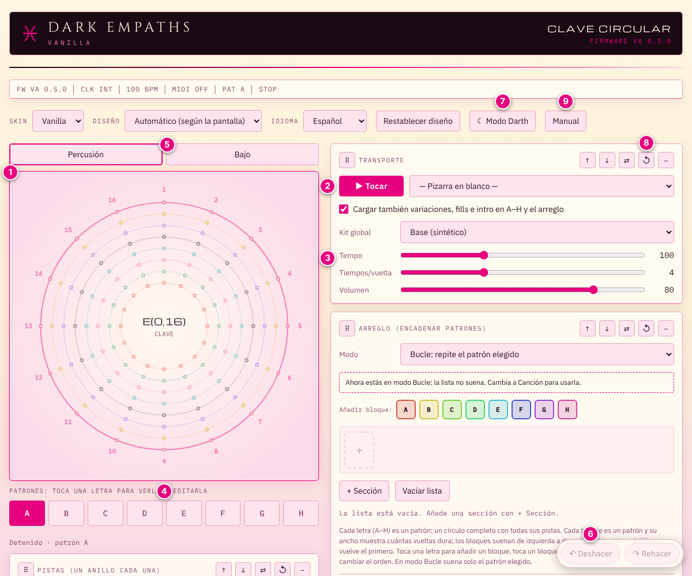
Pantalla inicial.
El círculo. Aquí se dibuja el ritmo. Cada anillo es una pista.
Tocar. Empieza y detiene el sonido.
Tempo. La velocidad, en pulsos por minuto.
Letras A a H. Ocho patrones: ocho círculos distintos que se pueden guardar y combinar.
Percusión / Bajo. Cambia el círculo entre la percusión y el bajo.
Deshacer y Rehacer. Botones flotantes abajo a la derecha.
Modo Darth. Cambia los colores claros por los oscuros (y de vuelta).
↺ Reiniciar. Cada módulo tiene el suyo: lo devuelve a cero.
Manual. Abre este manual.
Los módulos (Transporte, Arreglo, Pistas, Editar, Sonido, Bajo, Arpegio…) son los cuadros de la columna derecha. Se pueden plegar con el botón “–” y mover con las flechas.
Etapa 2
Tocar y cambiar el tempo
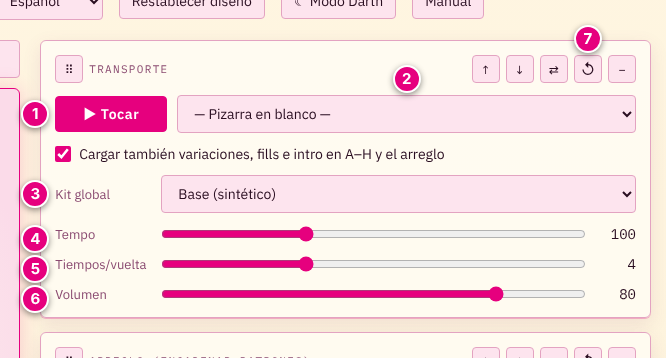
Módulo Transporte.
Tocar. Arranca y detiene.
Escena. Lista de ritmos ya armados por género. Al elegir una, reemplaza lo que hay en pantalla. “Pizarra en blanco” significa que no se cargó ninguna. El grupo “Ritmos del Perú” trae festejo, alcatraz, landó, marinera, vals criollo y polka criolla: el compás y el tempo salen de fuentes (festejo y alcatraz en 6/8, landó en 6/4 o 12/8, marinera y vals en 3/4, polka en 4/4), pero la posición de cada golpe es una propuesta, no una transcripción.
Kit global. Cambia el sonido de todas las pistas a la vez (por ejemplo 808 o 909).
Tempo. Más a la derecha, más rápido.
Tiempos/vuelta. Cuántos tiempos tiene una vuelta completa del círculo.
Volumen. Volumen general.
↺. Devuelve el módulo a sus valores iniciales: tempo 100, 4 tiempos, volumen 80 y kit base.
Prueba esto: pulsa Tocar, mueve el Tempo mientras suena y vuelve a pulsar Tocar para detener. Sin puntos en el círculo no se oye nada: eso se hace en la etapa siguiente.
Etapa 3
Dibujar un ritmo con puntos
El círculo se lee como un reloj: el paso 1 está arriba y los pasos avanzan hacia la derecha. Cada anillo es una pista. De afuera hacia adentro: Clave, Conga, Campana, Hi-hat abierto, Hi-hat cerrado, Clap, Caja y Bombo.
Tocar un punto lo activa; tocarlo otra vez lo apaga.
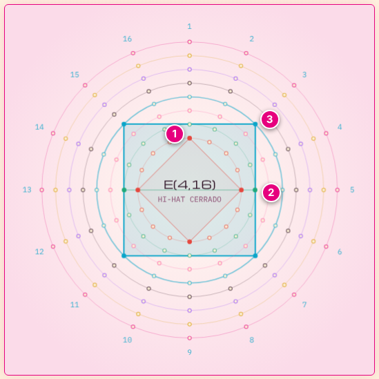
Un ritmo básico dibujado a mano.
Bombo (anillo interior): puntos en los pasos 1, 5, 9 y 13.
Caja: puntos en los pasos 5 y 13.
Hi-hat cerrado: puntos en los pasos 3, 7, 11 y 15.
Prueba esto: toca esos puntos en el círculo y pulsa Tocar. Después agrega o quita puntos mientras suena.
Etapa 4
Las pistas
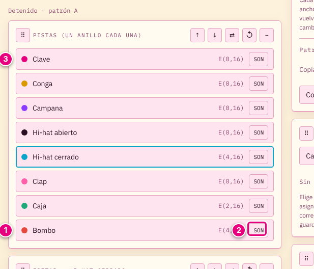
Módulo Pistas.
Una pista. Cada fila es un anillo. Al tocar la fila queda seleccionada: los módulos Editar y Sonido trabajan sobre la pista seleccionada.
Botón de silencio. Apaga o enciende esa pista sin borrar sus puntos.
Resumen del ritmo de cada pista, por ejemplo E(4,16): 4 golpes repartidos en 16 pasos.
Etapa 5
Pasos, pulsos y rotación
El módulo Editar arma ritmos de forma automática sobre la pista seleccionada.
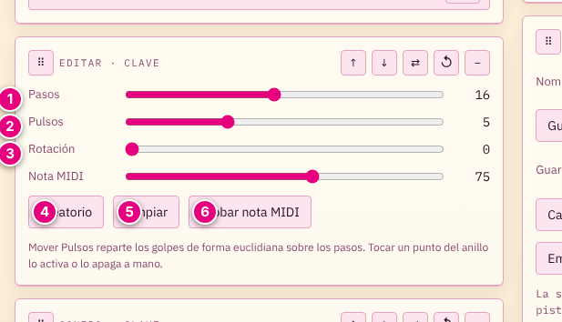
Módulo Editar, con la pista Clave seleccionada y 5 pulsos.
Pasos. En cuántos momentos se divide el círculo (entre 2 y 32).
Pulsos. Cuántos golpes hay. La aplicación los reparte parejo sobre los pasos.
Rotación. Gira el ritmo sin cambiarlo.
Canal MIDI de la pista. Por qué canal MIDI sale esta pista. “Heredar” usa el canal general del módulo MIDI (etapa 17).
Aleatorio. Reparte golpes al azar.
Limpiar. Quita todos los golpes de la pista.
Probar nota MIDI. Solo se usa con un equipo MIDI conectado (etapa 17).
Prueba esto: selecciona la pista Clave, pon Pasos en 16 y mueve Pulsos de 3 a 7. Luego mueve Rotación.
Etapa 6
Elegir el sonido
El módulo Sonido cambia cómo suena la pista seleccionada.
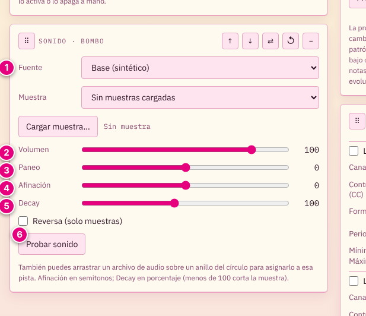
Módulo Sonido.
Fuente. El kit de esa pista. Incluye 808, 909, 707, 606 y cuatro kits nuevos: EBM potente, IDM glitch, Drill & bass y Peruano. El kit Peruano está sintetizado, no usa muestras: el bombo suena como cajón grave, la caja como cajón agudo, el hi-hat cerrado como checo, el hi-hat abierto como quijada, el clap como palmas, la clave como cajita, la conga como conga y la campana como cencerro.
Volumen de la pista.
Paneo. Izquierda o derecha.
Afinación. Más grave o más aguda, en semitonos.
Decay. Qué tan largo dura cada golpe.
Probar sonido. Lo hace sonar una vez.
También se pueden cargar sonidos propios con “Cargar muestra…” o con el módulo Packs de samples.
Etapa 7
Patrones A a H
Cada letra es un círculo completo con todas sus pistas. Sirven, por ejemplo, para tener una parte A y una parte B distintas. Al tocar una letra, el círculo pasa a ese patrón.
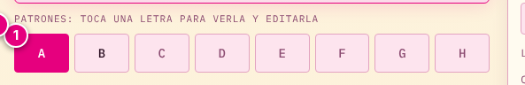
Las letras de los patrones, bajo el círculo.
En el módulo Arreglo, al final, “Copiar patrón actual” copia el patrón a otra letra y “Vaciar patrón actual” lo deja en blanco.
Prueba esto: dibuja un ritmo en A. Toca la letra B, dibuja otro distinto. Vuelve a A.
Etapa 8
Armar una canción
El módulo Arreglo encadena patrones para que suenen uno tras otro.
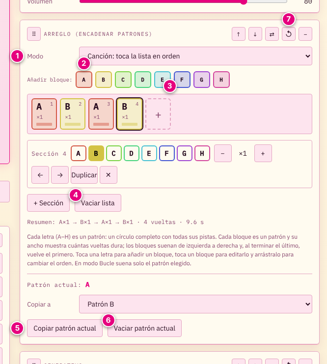
Una lista A, B, A, B en modo Canción.
Modo. “Bucle” repite el patrón elegido. “Canción” toca la lista en orden.
Añadir bloque. Toca una letra para agregar ese patrón al final de la lista.
La lista. Los bloques suenan de izquierda a derecha. Al terminar el último vuelve al primero. Tocar un bloque permite cambiar su letra, repetirlo más vueltas o moverlo.
Vaciar lista. Borra la lista (no borra los patrones).
Copiar patrón actual. Copia el patrón al que elijas en “Copiar a”.
Vaciar patrón actual. Deja en blanco el patrón en pantalla.
↺. Deja el Arreglo en cero: vacía los ocho patrones y la lista, y vuelve al modo Bucle.
Prueba esto: cambia el modo a Canción, agrega A, B, A, B y pulsa Tocar.
Etapa 9
El bajo
El bajo se activa en su módulo y se dibuja en su propio círculo, con la pestaña Bajo.
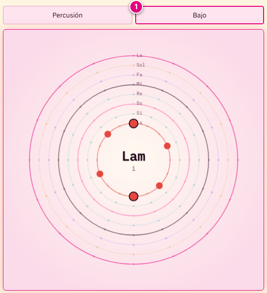
Círculo del bajo: cada anillo es una nota de la escala.
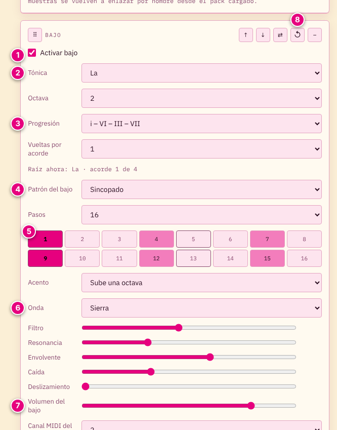
Módulo Bajo.
Activar bajo. Sin esto el bajo no suena.
Tónica. La nota base.
Progresión. La secuencia de acordes. Avanza una vez por vuelta (o cada 2 o 4 vueltas, según “Vueltas por acorde”). Hay un grupo “Tensión” con acordes disminuidos y tritonos.
Patrón del bajo. Ritmos ya armados para el bajo.
Pasos. Una casilla por paso: las rosadas están activas. Se pueden tocar para activarlas o apagarlas.
Onda. El timbre: Sierra, Cuadrada o Sub.
Volumen del bajo.
↺. Apaga el bajo y deja todo en blanco.
En el círculo del bajo, tocar un punto pone la nota de ese paso; tocarlo otra vez le da acento; otra vez la quita.
Prueba esto: marca “Activar bajo”, elige un patrón del bajo y pulsa Tocar. Cambia la Progresión mientras suena.
Etapa 10
El arpegiador
Toca las notas de un acorde una por una. Usa la misma tónica y progresión del módulo Bajo.
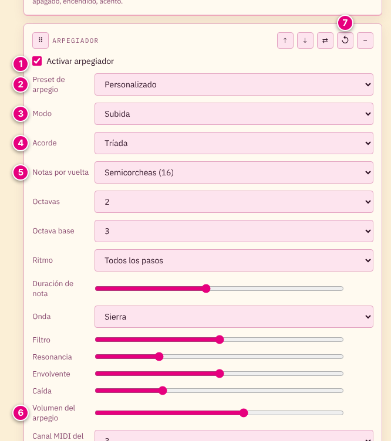
Módulo Arpegio.
Activar arpegiador.
Preset de arpegio. Configuraciones ya armadas.
Modo. Subida, bajada, sube y baja, al azar y otros.
Acorde. Tríada, séptima y otros, incluidos disminuido y tritono.
Notas por vuelta. Qué tan rápido va el arpegio.
Volumen del arpegio.
↺. Apaga el arpegiador y lo deja en cero.
Prueba esto: activa el bajo y el arpegiador, elige un preset de arpegio y pulsa Tocar.
Etapa 11
Deshacer, rehacer y reiniciar
Si algo sale mal, se puede volver atrás.
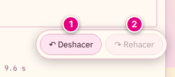
Botones flotantes abajo a la derecha.
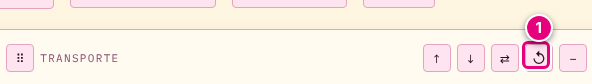
Botón ↺ en la cabecera de un módulo.
Deshacer y Rehacer. Van un paso atrás o adelante en los cambios de ritmo, sonido, bajo, arpegio, tempo y arreglo. Atajos: Ctrl + Z deshace; Ctrl + Y (o Ctrl + Shift + Z) rehace. En Mac, Cmd.
↺ de cada módulo. Lo devuelve a cero. Es un cambio más: se puede deshacer.
Módulo
Qué hace ↺
Transporte
Tempo 100, 4 tiempos, volumen 80, kit base.
Arreglo
Vacía los 8 patrones y la lista; modo Bucle.
Pistas
Quita silencios y deja el sonido de cada pista en valores iniciales.
Editar
La pista seleccionada: 16 pasos, 0 pulsos, sin rotación, sin golpes.
Sonido
La pista seleccionada: kit base, volumen, paneo, afinación y decay iniciales.
Bajo
Bajo apagado y en blanco.
Arpegio
Arpegiador apagado y en valores iniciales.
Teoría
Círculo cromático y temperamento igual.
Audio y MIDI
Valores iniciales de esas opciones.
Para empezar todo de cero está “Empezar sesión de cero” en el módulo Presets.
Prueba esto: pulsa ↺ en Arreglo y luego Deshacer. Los patrones vuelven.
Etapa 12
Modo Vanilla y modo Darth
El botón “Modo Darth” / “Modo Vanilla” de la barra de arriba cambia los colores de toda la aplicación. El cambio no afecta al sonido ni al ritmo.
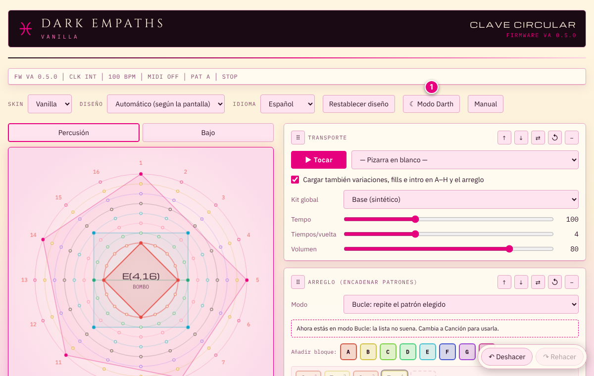
Modo Vanilla: fondo claro.
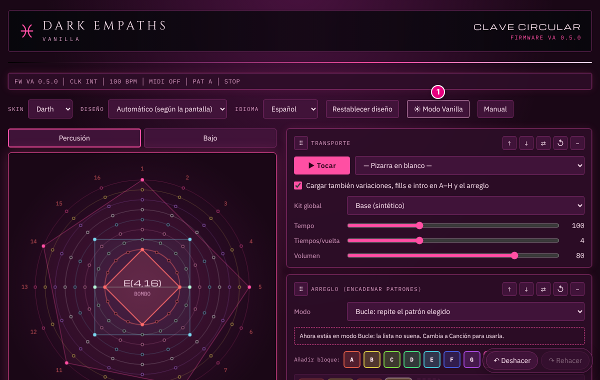
Modo Darth: fondo oscuro.
Etapa 13
Guardar y exportar
La aplicación guarda sola lo que se hace en este navegador y lo recupera al volver a abrirla. Para guardar versiones con nombre:
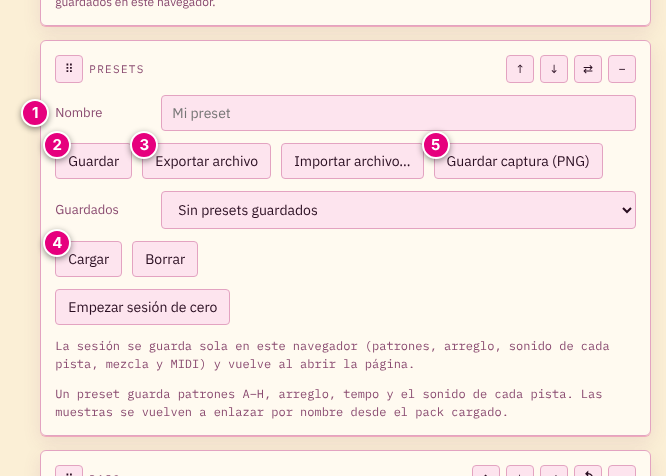
Módulo Presets.
Nombre del preset.
Guardar. Guarda en este navegador.
Exportar archivo. Genera un archivo que se puede enviar a otra persona.
Cargar. Carga el preset elegido en “Guardados”.
Guardar captura (PNG). Genera una imagen de la pantalla.
Para obtener el sonido o las notas fuera de la aplicación:
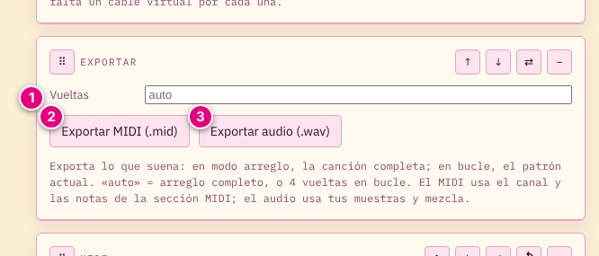
Módulo Exportar.
Vueltas. Cuántas vueltas exportar. Vacío (“auto”) exporta el arreglo completo.
Exportar MIDI (.mid). Las notas, para abrirlas en un programa de música.
Exportar audio (.wav). El sonido ya mezclado.
Etapa 14
Variación automática
El módulo Generativo cambia el ritmo de forma automática. Lo que está dibujado en el círculo no se pierde, salvo que se pida con “Adoptar la variación actual”.
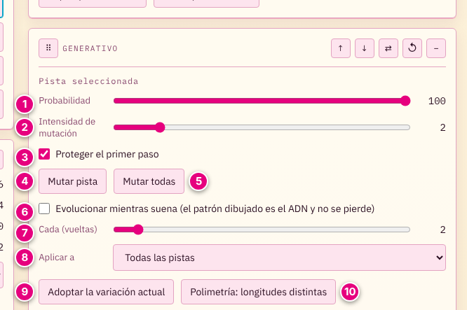
Módulo Generativo: variación de la pista seleccionada.
Probabilidad. Qué tan seguido suena cada golpe de la pista seleccionada. 100 es siempre; 50 es la mitad de las veces, al azar.
Intensidad de mutación. Cuántos golpes se mueven en cada mutación (de 1 a 8).
Proteger el primer paso. Si está marcado, el golpe del primer paso no se mueve.
Mutar pista. Mueve golpes de la pista seleccionada a pasos vecinos. La cantidad de golpes no cambia. Se puede deshacer.
Mutar todas. Lo mismo en todas las pistas.
Evolucionar mientras suena. Mientras toca, el ritmo varía solo cada cierto número de vueltas. El ritmo dibujado queda intacto: al detener y volver a tocar, parte otra vez de él.
Cada (vueltas). Cada cuántas vueltas varía el ritmo.
Aplicar a. Todas las pistas o solo la seleccionada.
Adoptar la variación actual. Convierte la variación que se ve en el círculo en el ritmo dibujado.
Polimetría: longitudes distintas. Da a cada pista un número de pasos distinto, y los ritmos se van desfasando entre sí. Se puede deshacer.
La exportación a MIDI y a audio usa el ritmo dibujado, sin probabilidad ni evolución.
Prueba esto: dibuja un ritmo, marca “Evolucionar mientras suena”, pon “Cada (vueltas)” en 1 y pulsa Tocar. Mira cómo se mueven los puntos en el círculo.
Etapa 15
Bajo y armonía automáticos
La parte baja del módulo Generativo trabaja sobre el bajo. Para oírlo, el bajo tiene que estar activado (etapa 9).
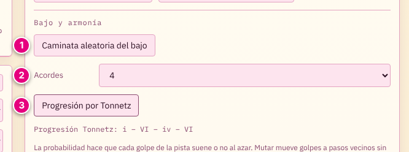
Bajo y armonía. Debajo de los botones aparece la progresión generada.
Caminata aleatoria del bajo. Genera las notas del bajo moviéndose por la escala con pasos cortos, empezando en la tónica. Si el bajo no tiene golpes, crea primero un ritmo base.
Acordes. Cuántos acordes tendrá la progresión: 4, 6 u 8.
Progresión por Tonnetz. Arma una progresión en la que cada acorde comparte dos notas con el anterior, y termina volviendo al primero. Queda elegida en el menú Progresión del módulo Bajo, en el grupo “Tonnetz”.
Prueba esto: activa el bajo, pulsa “Caminata aleatoria del bajo”, luego “Progresión por Tonnetz” y pulsa Tocar. Repite cualquiera de los dos botones para obtener otra versión.
Etapa 16
Modulación con LFO
Un LFO es un valor que sube y baja solo, con un ritmo fijo. Aquí cada LFO envía un controlador (CC) por MIDI al equipo conectado, sincronizado con la vuelta. No cambia el sonido interno de la aplicación, y necesita el MIDI conectado (etapa 17). Hay tres LFO; el manual muestra el primero.
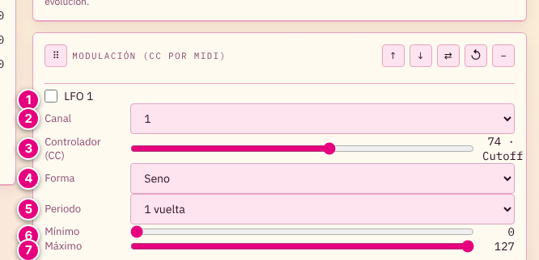
Módulo Modulación, LFO 1.
LFO 1. Activa o apaga este LFO.
Canal. Por qué canal MIDI se envía.
Controlador (CC). El número del controlador que se envía (de 0 a 127). Qué parámetro mueve depende del equipo: se confirma en su manual. Si el número coincide con un controlador del Electribe 2 (por ejemplo 74, Cutoff), junto al valor aparece su nombre.
Forma. Seno, Triángulo, Sierra, Sierra inversa, Cuadrada o Aleatoria escalonada.
Periodo. Cuánto tarda en recorrer la forma: de ¼ de vuelta a 16 vueltas.
Mínimo. El valor más bajo que envía.
Máximo. El valor más alto que envía.
Prueba esto: con el MIDI conectado, activa el LFO 1, elige el número de controlador que acepta tu equipo y pulsa Tocar. Cambia la Forma y el Periodo mientras suena.
Etapa 17
MIDI (opcional)
Solo sirve para conectar la aplicación a un programa o equipo MIDI. Para tocar sola no hace falta.
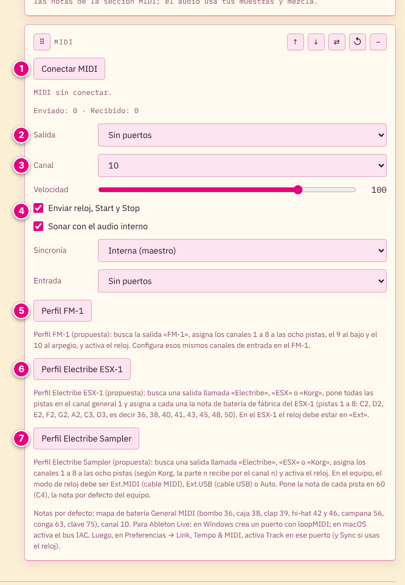
Módulo MIDI.
Conectar MIDI. Pide permiso al navegador y busca los puertos.
Salida. A qué puerto se envían las notas.
Canal. El canal MIDI general. Lo usan las pistas que tienen “Heredar” en su canal.
Enviar reloj, Start y Stop. Para que el otro equipo siga el mismo tempo.
Perfil FM-1. Busca la salida llamada FM-1, asigna los canales 1 a 8 a las ocho pistas, el 9 al bajo y el 10 al arpegio, y activa el reloj. Son canales propuestos: en el FM-1 hay que configurar esos mismos canales de entrada. Si no encuentra la salida, la elige uno mismo en Salida.
Perfil Electribe ESX-1. Busca una salida llamada Electribe, ESX o Korg, pone todas las pistas en el canal general 1 y asigna a cada pista la nota de batería de fábrica del ESX-1 (pistas 1 a 8: 36, 38, 40, 41, 43, 45, 48 y 50). En el ESX-1 el reloj debe estar en «Ext».
Perfil Electribe Sampler. Busca la misma salida, asigna los canales 1 a 8 a las ocho pistas (según Korg, la parte n recibe por el canal n), pone la nota de cada pista en 60 (C4, la nota por defecto del equipo) y activa el reloj. En el equipo, el modo de reloj debe ser Ext.MIDI (cable MIDI), Ext.USB (cable USB) o Auto.
Cada pista puede tener su propio canal: está en el módulo Editar, “Canal MIDI de la pista” (etapa 5).